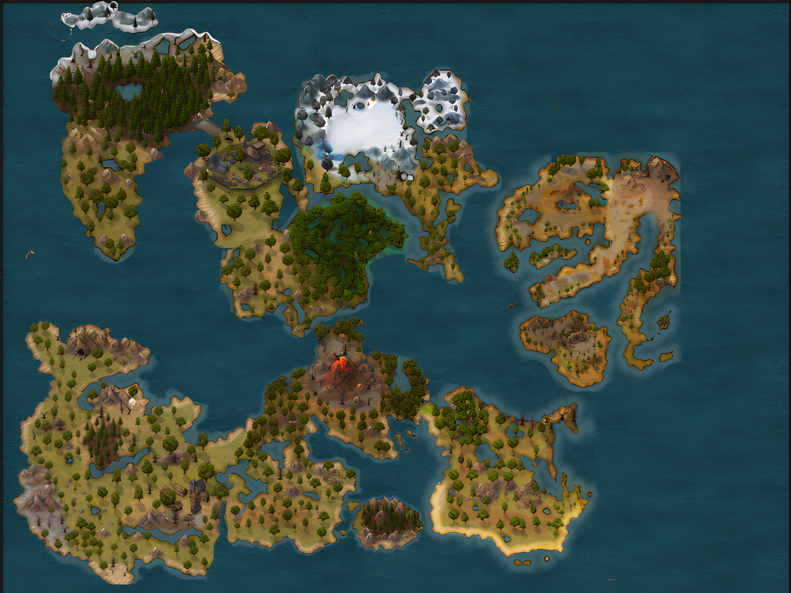

Mapas
A adaptação da ilha, denominada Ciclo do Ark, é intrínseca às alterações ambientais causadas por eventos naturais e pela ação de civilizações, mantendo-a em constante evolução…

O Ark pulsa com vida própria, um ciclo incessante de metamorfose… Prepare-se: a ilha está sempre um passo à frente.